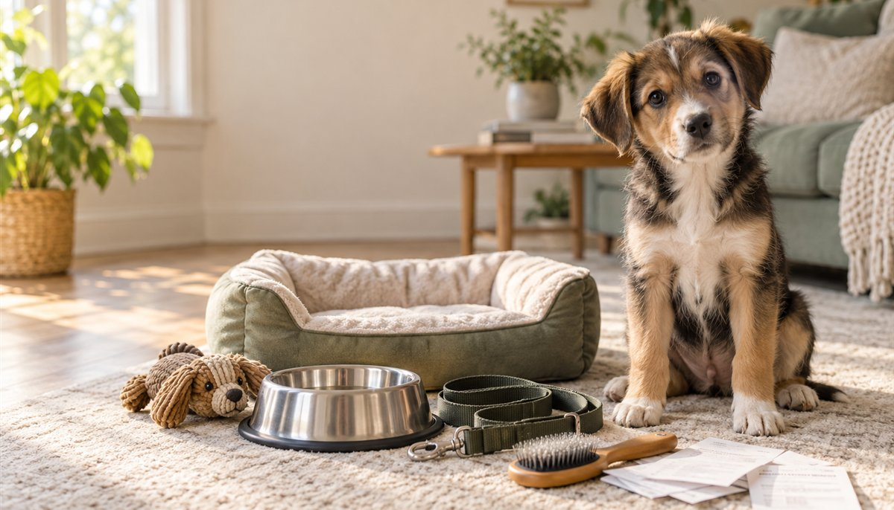

How Much Does a Puppy Cost in the First Year?

The puppy may be the smallest thing in the house, but the first-year budget is not. Adoption or purchase is only the opening line: setup supplies, food, training, routine care and the occasional destroyed bed all arrive afterward. This guide gives you a useful range, then helps you replace every estimate with prices from your own city.
Researched by the CanMyPet Editorial Team · Published September 27, 2026 · Financial planning information, not individualized advice.
A realistic planning worksheet
The ranges below are budgeting prompts in U.S. dollars, not quotes. Get local prices before bringing a puppy home.
| Category | Lean plan | Flexible plan |
|---|---|---|
| Adoption or purchase | Enter your actual fee | Enter your actual fee |
| Crate, bed, gates, bowls, leash and toys | $200–$400 | $400–$900 |
| Food and training treats | $350–$700 | $700–$1,400 |
| Routine care and preventives | Get a local clinic estimate | Get a local clinic estimate |
| Group training | $150–$300 | $300–$700+ |
| Grooming and replacements | $100–$300 | $300–$900+ |
| Insurance or emergency savings | Choose one funded plan | Insurance plus deductible reserve |
Why no single veterinary number? Clinic pricing, local requirements, the puppy's existing records and individual care plan vary too much. Ask the clinic for a written first-year estimate covering the services they recommend for your puppy.
The five costs people underestimate
1. Buying the same item twice
A growing puppy may outgrow a harness, crate divider setup or bed. Teething also turns “durable” into a temporary concept. Buy safe essentials, but delay premium versions until you know the puppy's adult size and habits.
2. Help during the workday
A young puppy cannot simply match an eight-hour workday. A sitter, walker, family member or adjusted schedule may be necessary. Price this before pickup; it can exceed food and toys combined.
3. Training beyond one class
A group foundations course is a strong start, not an entire education. Budget for follow-up classes or one private session if a specific challenge appears. Early support is usually easier than repairing a rehearsed habit later.
4. Breed and coat requirements
A large dog eats more; a continuously growing coat needs regular grooming; short-nosed or giant breeds may have different insurance pricing. “Dog average” is less useful than a budget based on expected adult size and coat.
5. The inconvenient emergency
Insurance and savings solve different problems. Insurance may reimburse covered claims after a deductible; cash savings can pay immediately and cover exclusions. Read policy terms carefully and decide how you would pay a large bill on a weekend.
What current benchmarks can — and cannot — tell you
The ASPCA's published U.S. worksheet lists a $3,221 first-year dog total, but labels its table as a 2021 update, so it is best treated as a historical baseline rather than a 2026 quote. The AKC has published an average near $3,085 across dog sizes, while also warning that many estimates run low. For one current reference point, AAHA reports that the 2026 average annual premium for dog accident-and-illness insurance is about $836; an individual quote can be very different.
The useful lesson is not that one total is “correct.” It is that food, supplies, training, routine care, insurance and an emergency plan all need separate lines.
Build your personal number in five minutes
- Open the pet cost calculator.
- Use the expected adult size, not today's puppy weight.
- Replace default estimates with one local food price, one clinic estimate and one training quote.
- Add workday care if nobody can provide the needed breaks.
- Create a separate emergency line and decide where that money will live.
Sources
- ASPCA — Cutting Pet Care Costs (table marked 2021)
- American Kennel Club — How Much Does It Cost to Raise a Dog?
- AAHA — What pet owners need to know about pet insurance
- AVMA — Selecting a pet dog
Prices are planning estimates, not financial or veterinary advice. Confirm costs and care decisions with local providers.